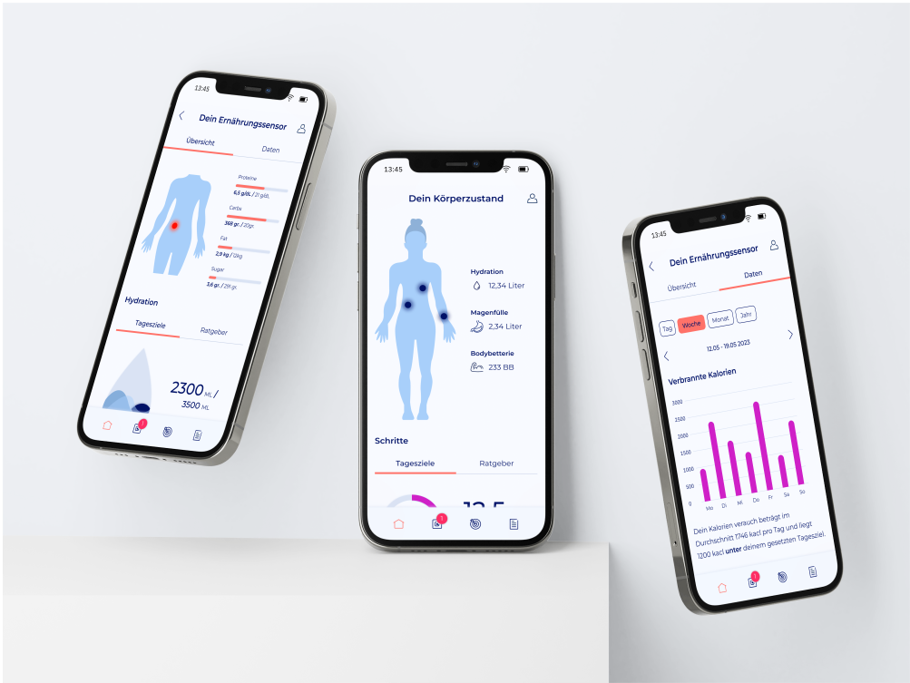
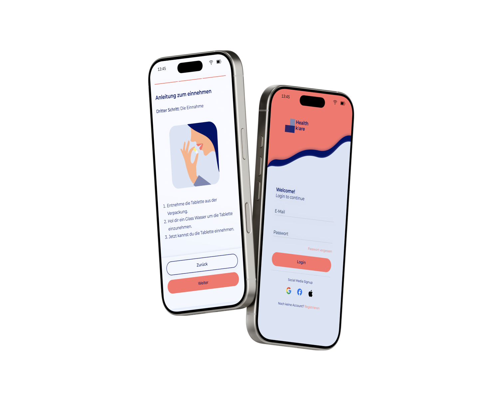
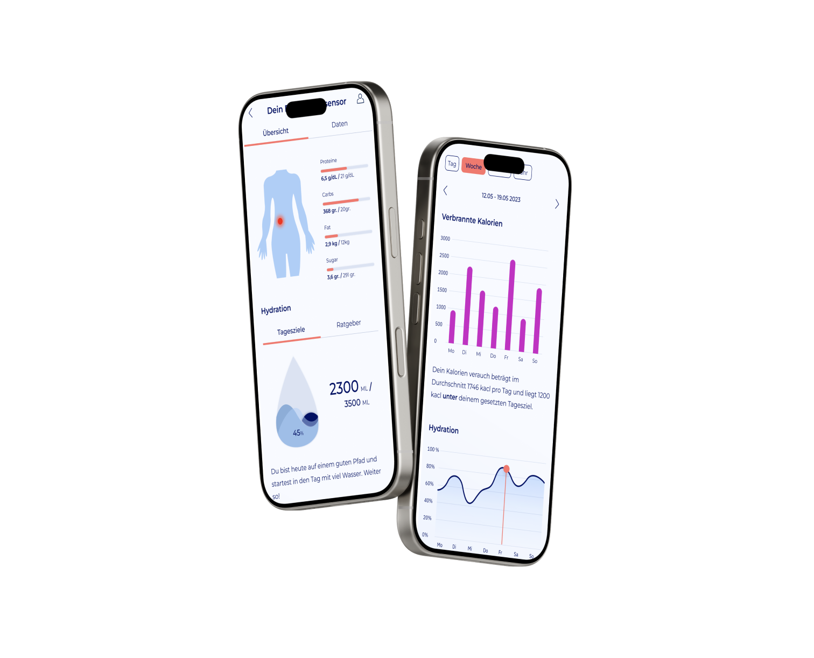

Health cAIre
AI-powered health application making personal health data understandable and actionable.
Complete design process from ideation through user research, wireframing, and final UI system. Focus on delivering motivating insights through clean, accessible interfaces.